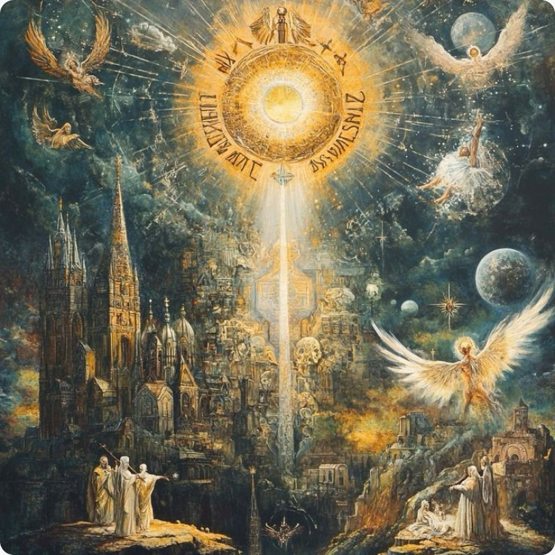

Высоко на светлом Олимпе царит Зевс, окруженный сонмом богов. Здесь и супруга его Гера, и златокудрый Аполлон с сестрой своей Артемидой, и златая Афродита, и могучая дочь Зевса Афина, и много других богов.
Три прекрасные Оры охраняют вход на высокий Олимп и подымают закрывающее врата густое облако, когда боги нисходят на землю или возносятся в светлые чертоги Зевса.
Высоко над Олимпом широко раскинулось голубое, бездонное небо, и льется с него золотой свет. Ни дождя, ни снега не бывает в царстве Зевса; вечно там светлое, радостное лето.
А ниже клубятся облака, порой закрывают они далекую землю. Там, на земле, весну и лето сменяют осень и зима, радость и веселье сменяются несчастьем и горем. Правда, и боги знают печали, но они скоро проходят, и снова водворяется радость на Олимпе.
Пируют боги в своих золотых чертогах, построенных сыном Зевса Гефестом. Царь Зевс сидит на высоком золотом троне. Величием и гордо-спокойным сознанием власти и могущества дышит мужественное, божественно прекрасное лицо Зевса.
У трона его - богиня мира Эйрена и постоянная спутница Зевса крылатая богиня победы Никэ. Вот входит прекрасная, величественная богиня Гера, жена Зевса. Зевс чтит свою жену: почетом окружают Геру, покровительницу брака, все боги Олимпа. Когда, блистая своей красотой, в пышном наряде, великая Гера входит в пиршественный зал, все боги встают и склоняются перед женой громовержца Зевса. А она, гордая своим могуществом, идет к золотому трону и садится рядом с царем богов и людей - Зевсом. Около трона Геры стоит ее посланница, богиня радуги, легкокрылая Ирида, всегда готовая быстро нестись на радужных крыльях исполнять повеления Геры в самые дальние края земли.
Пируют боги. Дочь Зевса, юная Геба, и сын царя Трои, Ганимед, любимец Зевса, получивший от него бессмертие, подносят им амврозию и нектар - пищу и напиток богов. Прекрасные хариты и музы услаждают их пением и танцами. Взявшись за руки, водят они хороводы, а боги любуются их легкими движениями и дивной, вечно юной красотой. Веселее становится пир олимпийцев. На этих пирах решают боги все дела, на них определяют они судьбу мира и людей.
С Олимпа рассылает людям Зевс свои дары и утверждает на земле порядок и законы. В руках Зевса судьба людей; счастье и несчастье, добро и зло, жизнь и смерть - все в его руках. Два больших сосуда стоят у врат дворца Зевса. В одном сосуде дары добра, в другом - зла. Зевс черпает в них добро и зло и посылает людям. Горе тому человеку, которому громовержец черпает дары только из сосуда со злом. Горе и тому, кто нарушает установленный Зевсом порядок на земле и не соблюдает его законов. Грозно сдвинет сын Крона свои густые брови, черные тучи заволокут тогда небо. Разгневается великий Зевс, и страшно подымутся волосы на голове его, глаза загорятся нестерпимым блеском; взмахнет он своей десницей - удары грома раскатятся по всему небу, сверкнет пламенная молния, и сотрясется высокий Олимп.
Не один Зевс хранит законы. У его трона стоит хранящая законы богиня Фемида. Она созывает, по повелению громовержца, собрания богов на светлом Олимпе народные собрания на земле, наблюдая, чтобы не нарушился порядок и закон. На Олимпе и дочь Зевса, богиня Дикэ, наблюдающая за правосудием. Строго карает Зевс неправедных судей, когда Дикэ доносит ему, что не соблюдают они законов, данных Зевсом. Богиня Дикэ - защитница правды и враг обмана.
Зевс хранит порядок и правду в мире и посылает людям счастье и горе. Но хотя посылает людям счастье и несчастье Зевс, все же судьбу людей определяют неумолимые богини судьбы - мойры, живущие на светлом Олимпе. Судьба самого Зевса в их руках. Властвует рок над смертными и над богами. Никому не уйти от велений неумолимого рока. Нет такой силы, такой власти, которая могла бы изменить хоть что-нибудь в том, что предназначено богам и смертным. Лишь смиренно склониться можно перед роком и подчиниться ему. Одни мойры знают веления рока. Мойра Клото прядет жизненную нить человека, определяя срок его жизни. Оборвется нить, и кончится жизнь. Мойра Лахесис вынимает, не глядя, жребий, который выпадает человеку в жизни. Никто не в силах изменить определенной мойрами судьбы, так как третья мойра, Атропос, все, что назначили в жизни человеку ее сестры, заносит в длинный свиток, а что занесено в свиток судьбы, то неизбежно. Неумолимы великие, суровые мойры.
Есть и еще на Олимпе богиня судьбы - это богиня Тюхэ, богиня счастья а благоденствия. Из рога изобилия, рога божественной козы Амалфеи, молоком которой был вскормлен сам Зевс, сошлет она дары людям, и счастлив тот человек, который встретит на своем жизненном пути богиню счастья Тюхэ; но как редко это бывает, и как несчастлив тот человек, от которого отвернется богиня Тюхэ, только что дававшая ему свои дары!
Так царит окруженный сонмом светлых богов на Олимпе великий царь людей и богов Зевс, охраняя порядок и правду во всем мире.